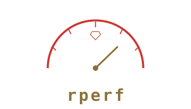

目次
rperf ガイド

Ruby 向けのセーフポイントベースのサンプリング性能プロファイラ。
rperf は、セーフポイントでサンプリングを行い、実際の時間差分を重みとして使用することでセーフポイントバイアスを補正する Ruby プログラムのプロファイラです。perf ライクな CLI、Ruby API を提供し、pprof、collapsed stacks、テキストレポート形式で出力します。
主な特徴:
- CPU モードとウォールクロックモード
- セーフポイントバイアスを補正する時間重み付きサンプリング
- GVL 競合と GC フェーズの追跡
- pprof、collapsed stacks、テキスト出力形式
- 低オーバーヘッド (デフォルト 1000 Hz でのサンプリングコールバックコスト < 0.2%)
- Ruby >= 3.4.0、POSIX システム (Linux, macOS) が必要
はじめに
このパートでは、rperf とは何か、なぜ作られたのか、そしてシステムへのインストール方法を説明します。
1. イントロダクション
1.1 rperf とは？
rperf は、セーフポイントベースのサンプリング性能プロファイラです。Ruby プログラムがどこで時間を使っているかを特定します。CPU 計算、I/O 待ち、GVL 競合、ガベージコレクションのいずれであっても対応できます。
従来のサンプリングプロファイラがサンプルを均等にカウントするのに対し、rperf は各サンプルの重みとして実際の時間差分（ナノ秒単位）を使用します。これにより、postponed job ベースのサンプリングに固有のセーフポイントバイアス問題を補正し、より正確な結果を生成します。
rperf は Linux の perf に着想を得ており、record、stat、report などのサブコマンドを持つ馴染みのある CLI インターフェースを提供します。
1.1.1 利点
- 正確なプロファイリング: 時間差分重み付けがセーフポイントバイアスを補正し、従来のカウントベースのプロファイラよりも実際の時間分布に近い結果を生成します。
- GVL / GC の可視化: wall モードでは、GVL 外のブロッキング、GVL 競合、GC marking/sweeping を個別のフレームとして追跡します。別途ツールは不要です。
- 標準出力形式: pprof protobuf（
go tool pprofと互換）、collapsed stacks（フレームグラフ / speedscope 向け）、人間が読めるテキスト形式で出力します。 - 低オーバーヘッド: デフォルト 1000 Hz でのサンプリングコールバックコストは < 0.2% で、本番環境での使用に適しています。
- シンプルな CLI:
rperf statで概要を素早く確認し、rperf record+rperf reportで詳細な分析が可能です。
1.1.2 制限事項
- Ruby 3.4 以降のみ: Ruby 3.4 で導入された API を必要とします。
- POSIX のみ: Linux と macOS。Windows はサポートされていません。
- メソッドレベルの粒度: 行番号の解像度はありません。プロファイルはメソッド名のみを表示します。
- 単一セッション: C 拡張のグローバル状態のため、同時に 1 つのプロファイリングセッションのみ有効です。
- セーフポイントレイテンシ: サンプルは依然としてセーフポイントまで遅延されます。時間差分重み付けはバイアスを補正しますが、正確な中断された命令ポインタは復元できません。
1.2 なぜ別のプロファイラが必要なのか？
Ruby には stackprof などのプロファイリングツールが既にあります。では、なぜ rperf が必要なのでしょうか？
1.2.1 セーフポイントバイアス問題
多くの Ruby サンプリングプロファイラは、シグナルハンドラ内で直接 rb_profile_frames を呼び出してバックトレースを収集します。このアプローチはシグナルの実際のタイミングでバックトレースを取得できますが、文書化されていない VM 内部の状態に依存しています。rb_profile_frames は async-signal-safe であることが保証されておらず、VM が内部構造を更新中の場合、結果が不正確になる可能性があります。
rperf は異なるアプローチを取ります。シグナルハンドラから安全に処理を遅延させるための Ruby VM の公式 API である postponed job メカニズム（rb_postponed_job）を使用します。バックトレースの収集は次のセーフポイントまで遅延されます。セーフポイントとは、VM が一貫した状態にあり、rb_profile_frames が信頼性の高い結果を返せるポイントです。タイマーがセーフポイント間で発火した場合、実際のサンプルは次のセーフポイントまで遅延されるというトレードオフがあります。
各サンプルが均等にカウントされる場合（重み = 1）、長時間実行される C メソッドによって遅延されたサンプルは、即座に取得されたサンプルと同じ重みを持つことになります。これがセーフポイントバイアス問題です。スレッドがセーフポイントに到達したときに実行中の関数がそうでない場合よりも多く出現し、セーフポイント間の関数は過小評価されます。
まだ停止できない VM->>Profiler: セーフポイント到達 (t=3ms) Note over Profiler: 従来: weight = 1
rperf: weight = 3ms Timer->>VM: シグナル (t=1ms) VM->>Profiler: セーフポイント到達 (t=1ms) Note over Profiler: 従来: weight = 1
rperf: weight = 1ms
mermaid source
sequenceDiagram
participant Timer
participant VM
participant Profiler
Timer->>VM: シグナル (t=0ms)
Note over VM: C メソッド実行中...<br/>まだ停止できない
VM->>Profiler: セーフポイント到達 (t=3ms)
Note over Profiler: 従来: weight = 1<br/>rperf: weight = 3ms
Timer->>VM: シグナル (t=1ms)
VM->>Profiler: セーフポイント到達 (t=1ms)
Note over Profiler: 従来: weight = 1<br/>rperf: weight = 1ms
rperf は各サンプルの重みとして clock_now - clock_prev を記録することでこの問題を解決します。3ms 遅延されたサンプルは 1ms のサンプルの 3 倍の重みを持ち、実際に時間が費やされた場所を正確に反映します。
1.2.2 その他の利点
- GVL と GC の認識: wall モードでは、rperf は GVL 外でのブロック時間、GVL の再取得待ち時間、GC の marking/sweeping フェーズの時間を、それぞれ個別の合成フレームとして追跡します。
- perf ライクな CLI:
rperf statコマンドで性能の概要を素早く確認でき（perf statのように）、rperf record+rperf reportで詳細なプロファイリングが可能です。 - 標準出力: rperf は pprof protobuf 形式で出力し、Go の
pprofツールエコシステムと互換性があります。フレームグラフや speedscope 向けの collapsed stacks 形式もサポートしています。 - 低オーバーヘッド: デフォルト 1000 Hz でのサンプリングコールバックコストは < 0.2% で、本番環境での使用に適しています。
1.3 要件
- Ruby >= 3.4.0
- POSIX システム (Linux または macOS)
- Go (オプション、
rperf reportおよびrperf diffサブコマンド用)
1.4 クイックスタート
Ruby スクリプトをプロファイルして結果を表示:
# rperf をインストール
gem install rperf
# 性能の概要を表示
rperf stat ruby my_app.rb
# プロファイルを記録してインタラクティブに表示
rperf record ruby my_app.rb
rperf report
Ruby コードから rperf を使用する場合:
require "rperf"
Rperf.start(output: "profile.pb.gz") do
# プロファイルしたいコード
end
2. インストール
2.1 gem のインストール
rperf は C 拡張を持つ Ruby gem として配布されています:
gem install rperf
または Gemfile に追加:
gem "rperf"
その後:
bundle install
2.2 インストールの確認
rperf が正しくインストールされていることを確認します:
rperf --help
以下のように表示されるはずです:
Usage: rperf record [options] command [args...]
rperf stat [options] command [args...]
rperf report [options] [file]
rperf diff [options] base.pb.gz target.pb.gz
rperf help
Run 'rperf help' for full documentation
2.3 プラットフォームサポート
rperf は POSIX システムをサポートしています:
| プラットフォーム | タイマー実装 | 備考 |
|---|---|---|
| Linux | timer_create + シグナル (デフォルト) |
最高精度 (1000Hz で ~1000us) |
| Linux | nanosleep スレッド (signal: false 使用時) |
フォールバック、~100us のドリフト/tick |
| macOS | nanosleep スレッド |
シグナルベースのタイマーは利用不可 |
Linux では、rperf はデフォルトで timer_create と SIGEV_SIGNAL を使い、sigaction ハンドラを使用します。これにより、追加スレッドなしで正確なインターバルタイミングが実現されます。シグナル番号はデフォルトで SIGRTMIN+8 で、Ruby API の Rperf.start に対する signal: キーワード引数で変更できます。
macOS では（および Linux で signal: false を設定した場合）、rperf は nanosleep ループを持つ専用の pthread にフォールバックします。
2.4 オプション: Go ツールチェーン
rperf report と rperf diff サブコマンドは go tool pprof の薄いラッパーです。これらのコマンドを使用する場合は、go.dev から Go をインストールしてください。
Go がなくても、rperf の他のすべての機能は使用できます。speedscope などの他のツールで pprof ファイルを表示したり、テキスト/collapsed 形式で直接生成したりできます。
使い方
このパートでは、rperf を使って Ruby プログラムをプロファイルする方法を説明します。コマンドラインからの使い方、ライブラリとしての使い方、そして利用可能な出力形式について解説します。
3. CLI の使い方
rperf は perf ライクなコマンドラインインターフェースを提供し、5 つの主要サブコマンドがあります: record、stat、exec、report、diff。
3.1 rperf stat
rperf stat は性能の概要を最も手軽に確認する方法です。コマンドを wall モードのプロファイリングで実行し、サマリーを stderr に出力します。
rperf stat ruby my_app.rb
3.1.1 例: CPU バウンドなプログラム
シンプルなフィボナッチ計算:
# fib.rb
def fib(n)
return n if n <= 1
fib(n - 1) + fib(n - 2)
end
fib(35)
rperf stat の実行:
rperf stat ruby fib.rb
Performance stats for 'ruby fib.rb':
744.4 ms user
32.0 ms sys
491.0 ms real
481.0 ms 100.0% CPU execution
12.0 ms [Ruby] GC time (9 count: 6 minor, 3 major)
154,468 [Ruby] allocated objects
66,596 [Ruby] freed objects
25 MB [OS] peak memory (maxrss)
31 [OS] context switches (10 voluntary, 21 involuntary)
0 MB [OS] disk I/O (0 MB read, 0 MB write)
481 samples / 481 triggers, 0.1% profiler overhead
出力の意味:
- user/sys/real: 標準的な時間計測（
timeコマンドと同様） - 時間の内訳: wall time がどこで費やされたか — CPU 実行、GVL ブロック（I/O/sleep）、GVL 待ち（競合）、GC marking、GC sweeping
- Ruby の統計: GC 回数、割り当て済み/解放済みオブジェクト、YJIT 比率（有効な場合）
- OS の統計: ピークメモリ、コンテキストスイッチ、ディスク I/O
--report を使用すると、フラットおよびキュムレイティブな上位 50 関数テーブルが出力に追加されます。
3.1.2 例: CPU と I/O の混合
# mixed.rb
def cpu_work(n)
sum = 0
n.times { |i| sum += i * i }
sum
end
def io_work
sleep(0.05)
end
5.times do
cpu_work(500_000)
io_work
end
rperf stat の実行:
rperf stat ruby mixed.rb
stat は常に wall モードを使用するため、CPU と I/O の間の時間配分が確認できます。[Ruby] GVL blocked の行は sleep/I/O に費やされた時間を示し、CPU execution は計算時間を示します。
3.1.3 stat のオプション
rperf stat [options] command [args...]
| オプション | 説明 |
|---|---|
-o PATH |
プロファイルをファイルにも保存 (デフォルト: なし) |
-f HZ |
サンプリング周波数 (Hz) (デフォルト: 1000) |
-m MODE |
cpu または wall (デフォルト: wall) |
--report |
フラット/キュムレイティブなプロファイルテーブルを出力に含める |
-v |
追加のサンプリング統計を出力 |
3.2 rperf exec
rperf exec はコマンドをプロファイリング付きで実行し、完全な性能レポートを stderr に出力します。rperf stat --report と同等です。デフォルトで wall モードを使用し、ファイルには保存しません。
rperf exec ruby my_app.rb
stat が表示するすべて（時間計測、時間内訳、GC/メモリ/OS 統計）に加えて、フラットおよびキュムレイティブな上位 50 関数テーブルが出力されます。
3.2.1 exec のオプション
rperf exec [options] command [args...]
| オプション | 説明 |
|---|---|
-o PATH |
プロファイルをファイルにも保存 (デフォルト: なし) |
-f HZ |
サンプリング周波数 (Hz) (デフォルト: 1000) |
-m MODE |
cpu または wall (デフォルト: wall) |
-v |
追加のサンプリング統計を出力 |
3.3 rperf record
rperf record はコマンドをプロファイルし、結果をファイルに保存します。詳細な分析のためにプロファイルをキャプチャする主要な方法です。
rperf record ruby my_app.rb
デフォルトでは、CPU モードの pprof 形式で rperf.data に保存します。
3.3.1 例: プロファイルの記録
rperf record ruby fib.rb
これにより rperf.data が作成されます。その後 rperf report や他の pprof 互換ツールで分析できます。
3.3.2 プロファイリングモードの選択
rperf は 2 つのプロファイリングモードをサポートしています:
- cpu (デフォルト): スレッドごとの CPU 時間を計測します。CPU サイクルを消費する関数を見つけるのに最適です。sleep、I/O、GVL 待ちの時間は無視されます。
- wall: ウォールクロック時間を計測します。I/O、sleep、GVL 競合を含む、wall time の使われ方を見つけるのに最適です。
# CPU モード (デフォルト)
rperf record ruby my_app.rb
# wall モード
rperf record -m wall ruby my_app.rb
3.3.3 出力形式の選択
rperf はファイル拡張子から形式を自動検出します:
# pprof 形式 (デフォルト)
rperf record -o profile.pb.gz ruby my_app.rb
# collapsed stacks (FlameGraph / speedscope 向け)
rperf record -o profile.collapsed ruby my_app.rb
# 人間が読めるテキスト
rperf record -o profile.txt ruby my_app.rb
形式を明示的に指定することもできます:
rperf record --format text -o profile.dat ruby my_app.rb
3.3.4 例: テキスト出力
rperf record -o profile.txt ruby fib.rb
テキスト出力は以下のようになります:
Total: 509.5ms (cpu)
Samples: 509, Frequency: 1000Hz
Flat:
509.5 ms 100.0% Object#fib (fib.rb)
Cumulative:
509.5 ms 100.0% Object#fib (fib.rb)
509.5 ms 100.0% <main> (fib.rb)
3.3.5 例: wall モードのテキスト出力
rperf record -m wall -o wall_profile.txt ruby mixed.rb
Total: 311.8ms (wall)
Samples: 80, Frequency: 1000Hz
Flat:
250.6 ms 80.4% [GVL blocked] (<GVL>)
44.1 ms 14.1% Object#cpu_work (mixed.rb)
13.9 ms 4.5% Integer#times (<internal:numeric>)
3.2 ms 1.0% Kernel#sleep (<C method>)
0.0 ms 0.0% [GVL wait] (<GVL>)
Cumulative:
311.8 ms 100.0% Integer#times (<internal:numeric>)
311.8 ms 100.0% block in <main> (mixed.rb)
311.8 ms 100.0% <main> (mixed.rb)
253.8 ms 81.4% Kernel#sleep (<C method>)
253.8 ms 81.4% Object#io_work (mixed.rb)
250.6 ms 80.4% [GVL blocked] (<GVL>)
58.0 ms 18.6% Object#cpu_work (mixed.rb)
0.0 ms 0.0% [GVL wait] (<GVL>)
wall モードでは、[GVL blocked] が支配的なコストとして表示されます。これは io_work 内の sleep 時間です。cpu_work の CPU 時間は明確に分離されています。
3.3.6 Verbose 出力
-v フラグはプロファイリング中にサンプリング統計を stderr に出力します:
rperf record -v ruby my_app.rb
[rperf] mode=cpu frequency=1000Hz
[rperf] sampling: 98 calls, 0.11ms total, 1.1us/call avg
[rperf] samples recorded: 904
[rperf] top 10 by flat:
[rperf] 53.4ms 50.1% Object#cpu_work (-e)
[rperf] 17.0ms 15.9% Integer#times (<internal:numeric>)
...
3.3.7 record のオプション
rperf record [options] command [args...]
| オプション | 説明 |
|---|---|
-o PATH |
出力ファイル (デフォルト: rperf.data) |
-f HZ |
サンプリング周波数 (Hz) (デフォルト: 1000) |
-m MODE |
cpu または wall (デフォルト: cpu) |
--format FMT |
pprof、collapsed、または text (デフォルト: 拡張子から自動検出) |
-p, --print |
テキストプロファイルを stdout に出力 (--format=text --output=/dev/stdout と同等) |
-v |
サンプリング統計を stderr に出力 |
3.4 rperf report
rperf report は pprof プロファイルを分析用に開きます。go tool pprof をラップしており、Go のインストールが必要です。
# インタラクティブな Web UI を開く (デフォルト)
rperf report
# 特定のファイルを開く
rperf report profile.pb.gz
# 上位の関数を出力
rperf report --top
# pprof テキストサマリーを出力
rperf report --text
3.4.1 例: top とテキスト出力
先ほど記録した fib.rb のプロファイルを使用:
rperf report --top rperf.data
Type: cpu
Showing nodes accounting for 577.31ms, 100% of 577.31ms total
flat flat% sum% cum cum%
577.31ms 100% 100% 577.31ms 100% Object#fib
0 0% 100% 577.31ms 100% <main>
デフォルト動作（--top や --text なし）では、フレームグラフ、上位関数ビュー、コールグラフの可視化を備えたインタラクティブな Web UI がブラウザで開きます。これは pprof を利用しています。
3.4.2 report のオプション
| オプション | 説明 |
|---|---|
--top |
フラットタイムによる上位の関数を出力 |
--text |
pprof テキストサマリーを出力 |
| (デフォルト) | ブラウザでインタラクティブな Web UI を開く |
3.5 rperf diff
rperf diff は 2 つの pprof プロファイルを比較し、差分（target - base）を表示します。最適化の効果を測定するのに便利です。
# ブラウザで差分を開く
rperf diff before.pb.gz after.pb.gz
# 差分による上位の関数を出力
rperf diff --top before.pb.gz after.pb.gz
# テキスト差分を出力
rperf diff --text before.pb.gz after.pb.gz
3.5.1 ワークフロー例
# ベースラインをプロファイル
rperf record -o before.pb.gz ruby my_app.rb
# 最適化を実施...
# 再度プロファイル
rperf record -o after.pb.gz ruby my_app.rb
# 比較
rperf diff before.pb.gz after.pb.gz
3.6 rperf help
rperf help はプロファイリングモード、出力形式、合成フレーム、診断のヒントを含む完全なリファレンスドキュメントを出力します。
rperf help
人間が読むのにも AI による分析にも適した詳細なドキュメントが出力されます。
4. Ruby API
rperf はプログラマティックなプロファイリングのための Ruby API を提供します。特定のコードセクションをプロファイルしたり、テストスイートにプロファイリングを統合したり、カスタムプロファイリングワークフローを構築したりする場合に便利です。
4.1 基本的な使い方
4.1.1 ブロック形式（推奨）
rperf を使用する最もシンプルな方法は、Rperf.start のブロック形式です。ブロックをプロファイルし、プロファイリングデータを返します:
require "rperf"
data = Rperf.start(output: "profile.pb.gz", frequency: 1000, mode: :cpu) do
# プロファイルしたいコード
end
output: を指定すると、ブロックの終了時にプロファイルが自動的にファイルに書き込まれます。このメソッドは、さらなる処理のために生データのハッシュも返します。
4.1.2 例: フィボナッチ関数のプロファイリング
require "rperf"
def fib(n)
return n if n <= 1
fib(n - 1) + fib(n - 2)
end
data = Rperf.start(frequency: 1000, mode: :cpu) do
fib(33)
end
Rperf.save("profile.txt", data)
実行すると以下のような出力が得られます:
Total: 192.7ms (cpu)
Samples: 192, Frequency: 1000Hz
Flat:
192.7ms 100.0% Object#fib (example.rb)
Cumulative:
192.7ms 100.0% Object#fib (example.rb)
192.7ms 100.0% block in <main> (example.rb)
192.7ms 100.0% Rperf.start (lib/rperf.rb)
192.7ms 100.0% <main> (example.rb)
4.1.3 手動での開始/停止
ブロック形式が使いにくい場合は、手動でプロファイリングを開始・停止できます:
require "rperf"
Rperf.start(frequency: 1000, mode: :wall)
# ... プロファイルしたいコード ...
data = Rperf.stop
Rperf.stop はデータハッシュを返します。プロファイラが動作していなかった場合は nil を返します。
4.2 Rperf.start のパラメータ
| パラメータ | 型 | デフォルト | 説明 |
|---|---|---|---|
frequency: |
Integer | 1000 | サンプリング周波数 (Hz) |
mode: |
Symbol | :cpu |
:cpu または :wall |
output: |
String | nil |
停止時に書き込むファイルパス |
verbose: |
Boolean | false |
統計を stderr に出力 |
format: |
Symbol | nil |
:pprof、:collapsed、:text、または nil（output 拡張子から自動検出） |
signal: |
Integer/Boolean | nil |
Linux のみ: nil = タイマーシグナル（デフォルト）、false = nanosleep スレッド、正の整数 = 特定の RT シグナル番号 |
aggregate: |
Boolean | true |
同一スタックをプロファイリング中に集約してメモリを削減。false は生のサンプルごとのデータを返す |
defer: |
Boolean | false |
タイマーを一時停止した状態で開始。特定のセクションのサンプリングを有効にするには Rperf.profile ブロックを使用 |
4.3 Rperf.stop の戻り値
Rperf.stop はプロファイラが動作していなかった場合は nil を返します。それ以外の場合は Hash を返します:
{
mode: :cpu, # または :wall
frequency: 1000,
sampling_count: 1234, # タイマーコールバックの回数
sampling_time_ns: 56789, # サンプリングに費やした合計時間（オーバーヘッド）
trigger_count: 1234, # タイマートリガーの回数
detected_thread_count: 4, # プロファイリング中に検出されたスレッド数
start_time_ns: 17740..., # CLOCK_REALTIME エポック（ナノ秒）
duration_ns: 10000000, # プロファイリング時間（ナノ秒）
unique_frames: 42, # ユニークフレーム数（aggregate: true の場合のみ）
unique_stacks: 120, # ユニークスタック数（aggregate: true の場合のみ）
samples: [ # [frames, weight, thread_seq, label_set_id] の配列
[frames, weight, seq, lsi], # frames: [[path, label], ...] 最深部が先頭
... # weight: Integer（ナノ秒）
], # seq: Integer（スレッド連番、1 始まり）
# lsi: Integer（ラベルセット ID、0 = ラベルなし）
label_sets: [{}, {request: "abc"}], # ラベルセットテーブル（index = label_set_id、ラベル使用時に存在）
}
各サンプルには以下が含まれます:
- frames:
[path, label]ペアの配列、最深部が先頭（リーフフレームがインデックス 0） - weight: このサンプルに帰属する時間（ナノ秒）
- thread_seq: スレッド連番（1 始まり、プロファイリングセッションごとに割り当て）
- label_set_id: ラベルセット ID（0 = ラベルなし）。
label_sets配列へのインデックス
aggregate: true（デフォルト）の場合、同一スタックはマージされ、重みが合計されます。samples 配列にはユニークな (stack, thread_seq, label_set_id) の組み合わせごとに 1 エントリが含まれます。aggregate: false の場合は、すべての生サンプルが個別に返されます。
4.4 Rperf.save
Rperf.save はプロファイリングデータをサポートされている任意の形式でファイルに書き込みます:
Rperf.save("profile.pb.gz", data) # pprof 形式
Rperf.save("profile.collapsed", data) # collapsed stacks
Rperf.save("profile.txt", data) # テキストレポート
形式はファイル拡張子から自動検出されます。format: キーワードでオーバーライドできます:
Rperf.save("output.dat", data, format: :text)
4.5 Rperf.snapshot
Rperf.snapshot は停止せずに現在のプロファイリングデータを返します。集約モード（デフォルト）でのみ動作します。プロファイリング中でない場合は nil を返します。
Rperf.start(frequency: 1000)
# ... 処理 ...
snap = Rperf.snapshot
Rperf.save("snap.pb.gz", snap)
# ... さらに処理（プロファイリングは継続） ...
data = Rperf.stop
clear: true を指定すると、スナップショット取得後に集約データがリセットされます。これにより、各スナップショットが前回のクリア以降の期間のみをカバーするインターバルベースのプロファイリングが可能になります:
Rperf.start(frequency: 1000)
loop do
sleep 10
snap = Rperf.snapshot(clear: true)
Rperf.save("profile-#{Time.now.to_i}.pb.gz", snap)
end
4.6 サンプルラベル
Rperf.label は現在のスレッドのサンプルにキーバリューラベルを付与します。ラベルは pprof のサンプルラベルに表示され、コンテキストごとのフィルタリング（例: リクエストごとのプロファイリング）が可能になります。プロファイリングが動作していない場合、label は暗黙的に無視されます。無条件に呼び出しても安全です（例: Rack ミドルウェアから）。
4.6.1 ブロック形式
ブロックを使用すると、ブロックの終了時にラベルが自動的に復元されます。例外が発生した場合も同様です:
Rperf.label(request: "abc-123", endpoint: "/api/users") do
handle_request # 内部のサンプルにこれらのラベルが付く
end
# ここでラベルは以前の状態に復元される
4.6.2 ブロックなし
ブロックなしの場合、ラベルは変更されるまで現在のスレッドに残ります:
Rperf.label(request: "abc-123")
# このスレッドの以降のすべてのサンプルに request="abc-123" が付く
4.6.3 マージと削除
新しいラベルは既存のラベルとマージされます。値を nil に設定するとキーが削除されます:
Rperf.label(request: "abc")
Rperf.label(phase: "db") # phase を追加、request は保持
Rperf.labels #=> {request: "abc", phase: "db"}
Rperf.label(request: nil) # request を削除
Rperf.labels #=> {phase: "db"}
4.6.4 ネストされたブロック
各ブロックはスコープを作成します。終了時に、ブロック内で何が起こったかに関係なく、ブロック前の状態にラベルが復元されます:
Rperf.label(request: "abc") do
Rperf.label(phase: "db") do
Rperf.labels #=> {request: "abc", phase: "db"}
end
Rperf.labels #=> {request: "abc"}
end
Rperf.labels #=> {}
4.6.5 pprof でのラベルによるフィルタリング
ラベルは pprof のサンプルラベルに書き込まれます。go tool pprof でフィルタリングできます:
# 特定のラベル値でフィルタ
go tool pprof -tagfocus=request=abc-123 profile.pb.gz
# スタックルートでラベルごとにグループ化（「どのリクエストが遅い？」）
go tool pprof -tagroot=request profile.pb.gz
# スタックリーフでラベルごとにグループ化（「この関数を呼んでいるのは誰？」）
go tool pprof -tagleaf=request profile.pb.gz
# 特定のラベル値を除外
go tool pprof -tagignore=request=healthcheck profile.pb.gz
4.6.6 ラベルの読み取り
Rperf.labels は現在のスレッドのラベルを Hash として返します:
Rperf.labels #=> {request: "abc", phase: "db"}
ラベルが設定されていない場合は空の Hash を返します。
4.7 遅延開始と Rperf.profile
4.7.1 なぜ遅延するのか？
通常、Rperf.start はサンプリングタイマーを即座に開始します。タイマーティックごとにスタックトレースをキャプチャするためにアプリケーションが中断されます。これがプロファイリングのオーバーヘッドです。長時間実行されるサーバーでは、すべてのコードに対して常にこのコストを払いたくないかもしれません。特定のエンドポイント、ジョブ、またはコードパスのみを対象にしたい場合があります。
defer: true はこの問題を解決します。プロファイラのインフラストラクチャ（バッファ、フック、ワーカースレッド）をセットアップしますが、タイマーは開始しません。タイマーは Rperf.profile ブロック内でのみ発火します。ブロックの外ではオーバーヘッドはゼロです。シグナルも、割り込みも、スタックキャプチャもありません。
start(defer: false) start(defer: true)
┌─────────────────┐ ┌─────────────────┐
│ start │ │ start │
│ ▓▓▓▓▓▓▓▓▓▓▓▓▓▓ │ │ │ ← タイマー非発火
│ ▓ sampling ▓▓▓▓ │ │ ┌──profile──┐ │
│ ▓▓▓▓▓▓▓▓▓▓▓▓▓▓ │ │ │▓▓sampling▓│ │ ← タイマー有効
│ ▓▓▓▓▓▓▓▓▓▓▓▓▓▓ │ │ └───────────┘ │
│ ▓▓▓▓▓▓▓▓▓▓▓▓▓▓ │ │ │ ← タイマー非発火
│ stop │ │ stop │
└─────────────────┘ └─────────────────┘
これはフレームワーク統合と組み合わせると特に便利です。ミドルウェアが各リクエスト/ジョブを profile ブロックでラップするため、実際のリクエスト処理のみがサンプリングされます。
4.7.2 Rperf.profile
Rperf.profile はブロックの間タイマーを有効化し、オプションでラベルを適用します。タイマー制御とラベル割り当てを 1 つの呼び出しで組み合わせます。
require "rperf"
Rperf.start(defer: true, mode: :wall)
# ここでタイマーが有効化され、サンプルに endpoint="/users" ラベルが付く
Rperf.profile(endpoint: "/users") do
handle_request
end
# タイマー一時停止 — オーバーヘッドゼロ
Rperf.profile(endpoint: "/health") do
check_health
end
data = Rperf.stop
Rperf.save("profile.pb.gz", data)
4.7.3 ネスト
profile ブロックはネストできます。タイマーは最も外側のブロックが終了するまで有効です。ラベルは Rperf.label と同様にマージされます:
Rperf.profile(endpoint: "/users") do
Rperf.profile(phase: "db") do
# {endpoint: "/users", phase: "db"} でサンプリング
query_db
end
# {endpoint: "/users"} でサンプリング
render_response
end
# タイマー再び一時停止
4.7.4 Rperf.label との組み合わせ
profile はタイマーを制御し、label はタグのみを追加します。両方を一緒に使用できます:
Rperf.start(defer: true, mode: :wall)
Rperf.profile(endpoint: "/users") do
Rperf.label(phase: "auth") do
authenticate # サンプリングされ、endpoint + phase のラベル付き
end
Rperf.label(phase: "db") do
query_db # サンプリングされ、endpoint + phase のラベル付き
end
end
4.7.5 defer なしの場合
profile は通常の（非遅延）start でも動作します。この場合、タイマーは既に動作しており、profile はラベルの適用のみを行います。ブロック付きの Rperf.label と同等です:
Rperf.start(mode: :wall)
Rperf.profile(endpoint: "/users") do
handle_request # サンプリングされる（タイマーは既に動作中）
end
4.7.6 エラー処理
profile はプロファイリングが開始されていない場合は RuntimeError を、ブロックが与えられない場合は ArgumentError を発生させます。ブロック内で例外が発生しても、ラベルとタイマーの状態は適切に復元されます。
4.8 実践的な例
4.8.1 Web リクエストハンドラのプロファイリング
require "rperf"
class ApplicationController
def profile_action
data = Rperf.start(mode: :wall) do
# 典型的なリクエストのシミュレーション
users = User.where(active: true).limit(100)
result = users.map { |u| serialize_user(u) }
render json: result
end
Rperf.save("request_profile.txt", data)
end
end
ここで wall モードを使用すると、CPU 時間だけでなくデータベース I/O や GVL 競合も捕捉できます。
4.8.2 CPU プロファイルと wall プロファイルの比較
require "rperf"
def workload
# CPU と I/O の混合
100.times do
compute_something
sleep(0.001)
end
end
# CPU プロファイル: CPU サイクルの使われ方を表示
cpu_data = Rperf.start(mode: :cpu) { workload }
Rperf.save("cpu.txt", cpu_data)
# wall プロファイル: wall time の使われ方を表示
wall_data = Rperf.start(mode: :wall) { workload }
Rperf.save("wall.txt", wall_data)
CPU プロファイルは compute_something に集中し、wall プロファイルは sleep 呼び出しを [GVL blocked] 時間として表示します。
4.8.3 サンプルの処理
サンプルデータをプログラマティックに処理できます。デフォルトでは、サンプルは集約されます（同一スタックがマージ）:
require "rperf"
data = Rperf.start(mode: :cpu) { workload }
# data[:aggregated_samples] に集約されたエントリが含まれる（ユニークスタックごとに 1 つ）
# 最もホットな関数を見つける
flat = Hash.new(0)
data[:aggregated_samples].each do |frames, weight, thread_seq|
leaf_label = frames.first&.last # frames[0] がリーフ
flat[leaf_label] += weight
end
top = flat.sort_by { |_, w| -w }.first(5)
top.each do |label, weight_ns|
puts "#{label}: #{weight_ns / 1_000_000.0}ms"
end
生の（非集約の）サンプルごとのデータを取得するには、aggregate: false を渡します。各タイマーティックが個別のエントリを生成します:
data = Rperf.start(mode: :cpu, aggregate: false) { workload }
# data[:raw_samples] にタイマーサンプルごとに 1 エントリが含まれる
data[:raw_samples].each do |frames, weight, thread_seq|
puts "thread=#{thread_seq} weight=#{weight}ns depth=#{frames.size}"
end
4.8.4 FlameGraph 用の collapsed stacks の生成
require "rperf"
data = Rperf.start(mode: :cpu) { workload }
Rperf.save("profile.collapsed", data)
collapsed 形式はユニークスタックごとに 1 行で、Brendan Gregg の FlameGraph ツールや speedscope と互換性があります:
frame1;frame2;...;leaf weight_ns
フレームグラフの SVG を生成できます:
flamegraph.pl profile.collapsed > flamegraph.svg
または .collapsed ファイルを speedscope で直接開くことができます。
5. 結果の解釈
5.1 フラットタイムとキュムレイティブタイム
フラットタイムとキュムレイティブタイムの違いを理解することは、効果的なプロファイリングに不可欠です。これは古典的なプロファイリング文献 gprof でも述べられています。
- フラットタイム: 関数に直接帰属する時間 — サンプル内でリーフ（最深部のフレーム）だった時間です。フラットタイムが高い場合、その関数自体が高コストな処理を行っています。
- キュムレイティブタイム: 関数がスタックのどこかに出現するすべてのサンプルの時間です。キュムレイティブタイムが高い場合、その関数（またはそれが呼び出すもの）が高コストです。
mermaid source
graph TD
A["main()"] -->|calls| B["process()"]
B -->|calls| C["compute()"]
B -->|calls| D["format()"]
style C fill:#ff6b6b,color:#fff
style D fill:#ffa07a,color:#fff
compute() のフラットタイムが高い場合、compute() 自体を最適化します。process() のキュムレイティブタイムが高くフラットタイムが低い場合、コストはその子関数（compute() と format()）にあります。
5.2 重みの単位
rperf のすべての重みは、プロファイリングモードに関係なくナノ秒です:
- 1,000 ns = 1 us (マイクロ秒)
- 1,000,000 ns = 1 ms (ミリ秒)
- 1,000,000,000 ns = 1 s (秒)
5.3 合成フレーム
通常の Ruby フレームに加えて、rperf は非 CPU アクティビティを表す合成フレームを記録します。これらは常にサンプル内のリーフ（最深部の）フレームとして表示されます。
5.3.1 [GVL blocked]
モード: wall のみ
スレッドが GVL の外にいた時間 — I/O 操作、sleep、GVL を解放する C 拡張の実行中。これは合成フレームの 1 つです。この時間は SUSPENDED イベント（スレッドが GVL を解放した時点）でキャプチャされたスタックに帰属されます。
[GVL blocked] 時間が高い場合、プログラムは I/O バウンドです。キュムレイティブビューで I/O をトリガーしている関数を確認してください。
5.3.2 [GVL wait]
モード: wall のみ
スレッドが準備完了後に GVL を再取得するまで待った時間。これは GVL 競合を示します。別のスレッドがこのスレッドの実行を妨げて GVL を保持しています。
[GVL wait] 時間が高い場合、スレッドが GVL 上でシリアライズされています。GVL を保持する処理を減らすか、Ractor を使用するか、子プロセスに処理を移動することを検討してください。
5.3.3 [GC marking]
モード: cpu および wall
GC の marking フェーズに費やされた時間。常に wall time で計測されます。GC をトリガーしたスタックに帰属されます。
[GC marking] 時間が高い場合、生存オブジェクトが多すぎます。長寿命のアロケーションを減らしてください。
5.3.4 [GC sweeping]
モード: cpu および wall
GC の sweeping フェーズに費やされた時間。常に wall time で計測されます。GC をトリガーしたスタックに帰属されます。
[GC sweeping] 時間が高い場合、短寿命のオブジェクトが多すぎます。オブジェクトの再利用やオブジェクトプールの使用を検討してください。
5.4 よくある問題の診断
5.4.1 高い CPU 使用率
モード: cpu
フラット CPU 時間が高い関数を探します。これらが CPU サイクルを消費している関数です。
対策: ホットな関数を最適化するか（より良いアルゴリズム、キャッシュ）、呼び出し頻度を減らします。
5.4.2 遅いリクエスト / 高レイテンシ
モード: wall
キュムレイティブな wall time が高い関数を探します。
[GVL blocked]が支配的な場合: I/O または sleep がボトルネックです。データベースクエリ、HTTP 呼び出し、ファイル I/O を確認してください。[GVL wait]が支配的な場合: GVL 競合です。GVL を保持する処理を減らすか、Ractor/子プロセスに移行してください。
5.4.3 GC プレッシャー
モード: cpu または wall
[GC marking] と [GC sweeping] のサンプルを探します。
[GC marking]が高い場合: 生存オブジェクトが多すぎます。長寿命オブジェクトのアロケーションを減らしてください。[GC sweeping]が高い場合: 短寿命オブジェクトが多すぎます。オブジェクトの再利用やプーリングを行ってください。
rperf stat の出力には GC 回数やアロケーション済み/解放済みオブジェクト数も表示されるため、アロケーションの多いコードの診断に役立ちます。
5.4.4 マルチスレッドアプリが想定より遅い
モード: wall
スレッド間の [GVL wait] 時間を探します。
rperf stat ruby threaded_app.rb
GVL 競合が発生しているワークロードの出力例:
Performance stats for 'ruby threaded_app.rb':
89.9 ms user
14.0 ms sys
41.2 ms real
0.5 ms 1.2% CPU execution
9.8 ms 23.8% [Ruby] GVL blocked (I/O, sleep)
30.8 ms 75.0% [Ruby] GVL wait (contention)
ここでは wall time の 75% が GVL 競合です。4 つのスレッドが GVL を奪い合い、CPU 処理がシリアライズされています。
5.5 効果的なプロファイリングのヒント
- デフォルト周波数 (1000 Hz) はほとんどの場合で適切です。長時間の本番プロファイリングでは、100-500 Hz でオーバーヘッドをさらに削減できます。
- 代表的なワークロードをプロファイルしてください。マイクロベンチマークではなく、実際のリクエストやバッチジョブをプロファイルすると、よりアクション可能な結果が得られます。
- cpu と wall のプロファイルを比較して、CPU バウンドと I/O バウンドのコードを区別します。wall モードでホットだが CPU モードではない関数は、I/O でブロックされています。
rperf diffを使用して最適化の効果を測定します。前後でプロファイルし、比較します。- verbose フラグ (
-v) でプロファイラのオーバーヘッドを確認し、上位の関数をすぐに確認できます。
6. 出力形式
rperf は 3 つの出力形式をサポートしています。形式はファイル拡張子から自動検出されるか、--format フラグ（CLI）または format: パラメータ（API）で明示的に設定できます。
6.1 pprof (デフォルト)
pprof 形式は gzip 圧縮された Protocol Buffers バイナリです。これは Go の pprof ツールで使用される標準形式で、rperf のデフォルト出力です。
拡張子の規約: .pb.gz
表示方法:
# インタラクティブな Web UI（Go が必要）
rperf report profile.pb.gz
# 上位の関数
rperf report --top profile.pb.gz
# テキストレポート
rperf report --text profile.pb.gz
# go tool pprof を直接使用する場合
go tool pprof -http=:8080 profile.pb.gz
go tool pprof -top profile.pb.gz
speedscope の Web インターフェースから pprof ファイルをインポートすることもできます。
利点: 幅広いツールエコシステムでサポートされている標準形式。2 つのプロファイル間の差分比較が可能。フレームグラフ、コールグラフ、ソースアノテーション付きのインタラクティブな探索。
6.1.1 埋め込みメタデータ
rperf は各 pprof プロファイルに以下のメタデータを埋め込みます:
| フィールド | 説明 |
|---|---|
comment |
rperf バージョン、プロファイリングモード、周波数、Ruby バージョン |
time_nanos |
プロファイル収集開始時刻（エポックナノ秒） |
duration_nanos |
プロファイル期間（ナノ秒） |
doc_url |
rperf ドキュメントへのリンク |
コメントの表示: go tool pprof -comments profile.pb.gz
6.1.2 サンプルラベル
各サンプルには thread_seq 数値ラベルが付きます。これはプロファイリングセッション中に rperf が各スレッドを初めて検出したときに割り当てられるスレッド連番（1 始まり）です。Rperf.label を使用すると、カスタムのキーバリュー文字列ラベルもサンプルに付与されます。
# スレッドごとにフレームグラフをグループ化
go tool pprof -tagroot=thread_seq profile.pb.gz
# カスタムラベルでフィルタ
go tool pprof -tagfocus=request=abc-123 profile.pb.gz
# ルートでラベルごとにグループ化（「どのリクエストが遅い？」）
go tool pprof -tagroot=request profile.pb.gz
# リーフでラベルごとにグループ化（「この関数を呼んでいるのは誰？」）
go tool pprof -tagleaf=request profile.pb.gz
# ラベルで除外
go tool pprof -tagignore=request=healthcheck profile.pb.gz
6.2 Collapsed stacks
collapsed stacks 形式は、ユニークなスタックトレースごとに 1 行のプレーンテキスト形式です。各行にはセミコロン区切りのスタック（ボトムからトップ）の後にスペースとナノ秒単位の重みが続きます。
拡張子の規約: .collapsed
形式:
bottom_frame;...;top_frame weight_ns
出力例:
<main>;Integer#times;block in <main>;Object#cpu_work;Integer#times;Object#cpu_work 53419170
<main>;Integer#times;block in <main>;Object#cpu_work;Integer#times 16962309
<main>;Integer#times;block in <main>;Object#io_work;Kernel#sleep 2335151
使用方法:
# FlameGraph SVG を生成
rperf record -o profile.collapsed ruby my_app.rb
flamegraph.pl profile.collapsed > flamegraph.svg
# speedscope で開く（.collapsed ファイルをドラッグ＆ドロップ）
# macOS: open https://www.speedscope.app/
# Linux: xdg-open https://www.speedscope.app/
利点: シンプルなテキスト形式で、コマンドラインツールで処理しやすい。Brendan Gregg の FlameGraph ツールや speedscope と互換性があります。
6.2.1 collapsed stacks のプログラマティックなパース
File.readlines("profile.collapsed").each do |line|
stack, weight = line.rpartition(" ").then { |s, _, w| [s, w.to_i] }
frames = stack.split(";")
# frames[0] がボトム（main）、frames[-1] がリーフ（ホット）
puts "#{frames.last}: #{weight / 1_000_000.0}ms"
end
6.3 テキストレポート
テキスト形式は、フラットおよびキュムレイティブな上位 N テーブルを含む人間が読める（AI にも読める）レポートです。
拡張子の規約: .txt
出力例:
Total: 509.5ms (cpu)
Samples: 509, Frequency: 1000Hz
Flat:
509.5 ms 100.0% Object#fib (fib.rb)
Cumulative:
509.5 ms 100.0% Object#fib (fib.rb)
509.5 ms 100.0% <main> (fib.rb)
セクション:
- ヘッダー: プロファイルされた合計時間、サンプル数、周波数
- フラットテーブル: セルフタイム（関数がリーフ/最深部フレームだった時間）でソートされた関数
- キュムレイティブテーブル: トータルタイム（関数がスタックのどこかに出現した時間）でソートされた関数
利点: ツール不要 — cat で読める。テーブルごとにデフォルトで上位 50 エントリ。クイック分析、イシューレポートでの共有、AI アシスタントへの入力に適しています。
6.4 形式の比較
| 機能 | pprof | collapsed | text |
|---|---|---|---|
| ファイルサイズ | 小 (バイナリ + gzip) | 中 (テキスト) | 小 (テキスト) |
| フレームグラフ | あり (pprof Web UI) | あり (flamegraph.pl) | なし |
| コールグラフ | あり | なし | なし |
| 差分比較 | あり (rperf diff) |
なし | なし |
| ツール不要 | いいえ (Go 必要) | いいえ (flamegraph.pl 必要) | はい |
| プログラマティックなパース | 複雑 (protobuf) | シンプル | シンプル |
| AI フレンドリー | いいえ | はい | はい |
6.5 自動検出ルール
| ファイル拡張子 | 形式 |
|---|---|
.collapsed |
Collapsed stacks |
.txt |
テキストレポート |
| その他 | pprof |
デフォルトの出力ファイル（rperf.data）は pprof 形式を使用します。
7. フレームワーク統合
rperf は、Web フレームワークやジョブプロセッサからのコンテキストで自動的にプロファイルおよびラベル付けするオプションの統合機能を提供します。これらは Rperf.profile を使用し、タイマーの有効化とラベルの設定を同時に行います。start(defer: true) とシームレスに連携し、ミドルウェアを通過するリクエスト/ジョブのみがサンプリングされます。プロファイリングの開始は別途行ってください（例: イニシャライザで）。
7.1 Rack ミドルウェア
Rperf::RackMiddleware は各リクエストをプロファイルし、エンドポイント（METHOD /path）でラベル付けします。
require "rperf/rack"
7.1.1 Rails
# config/initializers/rperf.rb
require "rperf/rack"
Rperf.start(defer: true, mode: :wall, frequency: 99)
Rails.application.config.middleware.use Rperf::RackMiddleware
at_exit do
data = Rperf.stop
Rperf.save("tmp/profile.pb.gz", data) if data
end
その後、エンドポイントでプロファイルをフィルタリング:
go tool pprof -tagfocus=endpoint="GET /api/users" tmp/profile.pb.gz
go tool pprof -tagroot=endpoint tmp/profile.pb.gz # エンドポイントごとにグループ化
7.1.2 Sinatra
require "sinatra"
require "rperf/rack"
Rperf.start(defer: true, mode: :wall, frequency: 99)
use Rperf::RackMiddleware
at_exit do
data = Rperf.stop
Rperf.save("profile.pb.gz", data) if data
end
get "/hello" do
"Hello, world!"
end
7.1.3 ラベルキーのカスタマイズ
デフォルトではミドルウェアはラベルキー :endpoint を使用します。変更できます:
use Rperf::RackMiddleware, label_key: :route
7.2 Active Job
Rperf::ActiveJobMiddleware は各ジョブをプロファイルし、クラス名（例: SendEmailJob）でラベル付けします。任意の Active Job バックエンド（Sidekiq、GoodJob、Solid Queue など）で動作します。
require "rperf/active_job"
イニシャライザでプロファイリングを開始し、ベースジョブクラスにインクルードします:
# config/initializers/rperf.rb
Rperf.start(defer: true, mode: :wall, frequency: 99)
# app/jobs/application_job.rb
class ApplicationJob < ActiveJob::Base
include Rperf::ActiveJobMiddleware
end
すべてのサブクラスが自動的にラベルを継承します:
class SendEmailJob < ApplicationJob
def perform(user)
# ここのサンプルに job="SendEmailJob" が付く
end
end
ジョブでフィルタリング:
go tool pprof -tagfocus=job=SendEmailJob profile.pb.gz
go tool pprof -tagroot=job profile.pb.gz # ジョブクラスごとにグループ化
7.3 Sidekiq
Rperf::SidekiqMiddleware は各ジョブをプロファイルし、ワーカークラス名でラベル付けします。Active Job ベースのワーカーとプレーンな Sidekiq ワーカーの両方をカバーします。
require "rperf/sidekiq"
Sidekiq のサーバーミドルウェアとして登録します:
# config/initializers/sidekiq.rb
Rperf.start(defer: true, mode: :wall, frequency: 99)
Sidekiq.configure_server do |config|
config.server_middleware do |chain|
chain.add Rperf::SidekiqMiddleware
end
end
Note
Active Job と Sidekiq を併用する場合は、どちらか一方を選んでください。両方を使用するとラベルが重複します。Sidekiq ミドルウェアの方がより汎用的です（非 Active Job ワーカーもカバー）。
7.4 Rperf.profile によるオンデマンドプロファイリング
特定のエンドポイントやジョブのみをプロファイルし、他の部分ではオーバーヘッドをゼロにしたい場合は、Rperf.start(defer: true) と Rperf.profile を使用します:
# config/initializers/rperf.rb
require "rperf"
Rperf.start(defer: true, mode: :wall, frequency: 99)
# プロファイルを定期的にエクスポート
Thread.new do
loop do
sleep 60
snap = Rperf.snapshot(clear: true)
Rperf.save("tmp/profile-#{Time.now.to_i}.pb.gz", snap) if snap
end
end
その後、特定のコードパスを profile でラップします:
class UsersController < ApplicationController
def index
Rperf.profile(endpoint: "GET /users") do
@users = User.all
end
end
end
profile ブロックのみがサンプリングされます。他のリクエストやバックグラウンド処理にはタイマーのオーバーヘッドがゼロです。
7.5 Rails の完全な設定例
Web とジョブの両方をプロファイリングする典型的な Rails 設定:
# config/initializers/rperf.rb
require "rperf/rack"
require "rperf/sidekiq"
Rperf.start(defer: true, mode: :wall, frequency: 99)
# Web リクエストにラベル付け
Rails.application.config.middleware.use Rperf::RackMiddleware
# Sidekiq ジョブにラベル付け
Sidekiq.configure_server do |config|
config.server_middleware do |chain|
chain.add Rperf::SidekiqMiddleware
end
end
# プロファイルを定期的にエクスポート
Thread.new do
loop do
sleep 60
snap = Rperf.snapshot(clear: true)
Rperf.save("tmp/profile-#{Time.now.to_i}.pb.gz", snap) if snap
end
end
エンドポイントとジョブ間の時間の使われ方を比較:
go tool pprof -tagroot=endpoint tmp/profile-*.pb.gz # Web の内訳
go tool pprof -tagroot=job tmp/profile-*.pb.gz # ジョブの内訳
詳細解説
このパートでは、プロファイリング結果の読み方と活用方法を説明し、rperf の内部動作を解説します。
8. アーキテクチャ概要
この章では、rperf のハイレベルなアーキテクチャと、プロファイリングを支えるコアデータ構造を説明します。これらの内部構造を理解することで、プロファイリング結果のエッジケースの解釈や設計上のトレードオフの評価に役立ちます。
8.1 システム図
rperf は C 拡張と Ruby ラッパーで構成されています:
(signal or pthread_cond_timedwait)"] PJ["rb_postponed_job_trigger"] Sample["サンプルコールバック
(rperf_sample_job)"] ThreadHook["スレッドイベントフック
(SUSPENDED/READY/RESUMED/EXITED)"] GCHook["GC イベントフック
(ENTER/EXIT/START/END_MARK/END_SWEEP)"] BufA["サンプルバッファ A"] BufB["サンプルバッファ B"] Worker["ワーカースレッド
(timer + aggregation)"] FrameTable["フレームテーブル
(VALUE → frame_id)"] AggTable["集約テーブル
(stack → weight)"] end subgraph "Ruby (lib/rperf.rb)" API["Rperf.start / Rperf.stop"] Encoders["エンコーダー
(PProf / Collapsed / Text)"] StatOut["stat 出力"] end Timer -->|triggers| PJ PJ -->|at safepoint| Sample Sample -->|writes| BufA ThreadHook -->|writes| BufA GCHook -->|writes| BufA BufA -->|swap when full| BufB BufB -->|aggregated by| Worker Worker -->|inserts| FrameTable Worker -->|inserts| AggTable API -->|calls| Sample AggTable -->|read at stop| Encoders FrameTable -->|resolved at stop| Encoders Encoders --> StatOut
mermaid source
graph TD
subgraph "C 拡張 (ext/rperf/rperf.c)"
Timer["タイマー<br/>(signal or pthread_cond_timedwait)"]
PJ["rb_postponed_job_trigger"]
Sample["サンプルコールバック<br/>(rperf_sample_job)"]
ThreadHook["スレッドイベントフック<br/>(SUSPENDED/READY/RESUMED/EXITED)"]
GCHook["GC イベントフック<br/>(ENTER/EXIT/START/END_MARK/END_SWEEP)"]
BufA["サンプルバッファ A"]
BufB["サンプルバッファ B"]
Worker["ワーカースレッド<br/>(timer + aggregation)"]
FrameTable["フレームテーブル<br/>(VALUE → frame_id)"]
AggTable["集約テーブル<br/>(stack → weight)"]
end
subgraph "Ruby (lib/rperf.rb)"
API["Rperf.start / Rperf.stop"]
Encoders["エンコーダー<br/>(PProf / Collapsed / Text)"]
StatOut["stat 出力"]
end
Timer -->|triggers| PJ
PJ -->|at safepoint| Sample
Sample -->|writes| BufA
ThreadHook -->|writes| BufA
GCHook -->|writes| BufA
BufA -->|swap when full| BufB
BufB -->|aggregated by| Worker
Worker -->|inserts| FrameTable
Worker -->|inserts| AggTable
API -->|calls| Sample
AggTable -->|read at stop| Encoders
FrameTable -->|resolved at stop| Encoders
Encoders --> StatOut
C 拡張はすべての性能重視の操作（タイマー管理、サンプル記録、集約）を処理します。Ruby レイヤーはユーザー向け API、出力エンコーディング、統計のフォーマットを提供します。
8.2 グローバルプロファイラ状態
rperf は単一のグローバルな rperf_profiler_t 構造体を使用します。一度に 1 つのプロファイリングセッションのみ有効です（単一セッション制限）。この構造体は以下を保持します:
- タイマー設定（周波数、モード、シグナル番号）
- ダブルバッファリングされたサンプルストレージ（2 つのサンプルバッファ + フレームプール、満杯時にスワップ）
- フレームテーブル（VALUE → uint32 frame_id、フレーム参照の重複排除）
- 集約テーブル（ユニークスタック → 累積重み）
- ワーカースレッドハンドル（統合タイマー + 集約スレッド）
- スレッドごとのデータ用のスレッド固有キー
- GC フェーズ追跡状態
- サンプリングオーバーヘッドカウンター
8.3 スレッドごとのデータ
各スレッドには Ruby のスレッド固有データ API（rb_internal_thread_specific_set）で格納される rperf_thread_data_t 構造体があります。以下を追跡します:
prev_time_ns: 前回の時刻読み取り（重み計算用）prev_wall_ns: 前回の wall time 読み取りsuspended_at_ns: スレッドがサスペンドされた wall タイムスタンプready_at_ns: スレッドが準備完了になった wall タイムスタンプsuspended_frame_start/depth: SUSPENDED イベントで保存されたバックトレースlabel_set_id: 現在のラベルセット ID（0 = ラベルなし）
スレッドデータは最初の検出時に遅延作成され、EXITED イベントまたはプロファイラ停止時に解放されます。
8.4 GC 安全性
フレーム VALUE はガベージコレクションから保護する必要があります。rperf はプロファイラ構造体を TypedData オブジェクトでラップし、3 つの領域をマークするカスタム dmark 関数を持ちます:
- 両方のフレームプール（アクティブバッファとスタンバイバッファ）
- フレームテーブルキー（ユニークフレーム VALUE、合成フレームスロットを除く）
フレームテーブルキー配列は 4,096 エントリから始まり、満杯時に 2 倍に拡張されます。拡張時は新しい配列を確保し、既存データをコピーし、ポインタをアトミックにスワップします（memory_order_release）。古い配列は stop まで保持され、GC の mark フェーズが同時にそれを読み取っている場合の use-after-free を防ぎます。dmark 関数はキーポインタを memory_order_acquire でロードし、カウントも memory_order_acquire でロードして一貫したビューを保証します。
8.5 Fork 安全性
rperf は fork された子プロセスでプロファイリングを静かに停止する pthread_atfork 子ハンドラを登録します（fork 安全性）:
- タイマー/シグナル状態をクリア
- イベントフックを削除
- サンプルバッファ、フレームテーブル、集約テーブルを解放
親プロセスは影響を受けずにプロファイリングを継続します。子プロセスは必要に応じて新しいプロファイリングセッションを開始できます。
8.6 既知の制限事項
8.6.1 Running EC レース
Ruby VM には、タイマースレッドからの rb_postponed_job_trigger が誤ったスレッドの実行コンテキストに割り込みフラグを設定してしまう既知のレース条件があります。これは、新しいスレッドのネイティブスレッドが GVL を取得する前に開始された場合に発生します。結果として、C のビジーウェイトを行っているスレッドのタイマーサンプルが欠落し、その CPU 時間が次の SUSPENDED イベントのスタックに漏れ出す可能性があります。
これは rperf のバグではなく Ruby VM のバグであり、すべての postponed job ベースのプロファイラに影響します。
8.6.2 単一セッション
グローバルプロファイラ状態のため、一度に 1 つのプロファイリングセッションのみ有効です。プロファイリング中に Rperf.start を呼び出すことはサポートされていません。
8.6.3 メソッドレベルの粒度
rperf はメソッドレベルでプロファイルし、行レベルではありません。フレームラベルは修飾名（例: Integer#times、MyClass#method_name）に rb_profile_frame_full_label を使用します。行番号は含まれません。
9. サンプリング
この章では、rperf がサンプルを収集する方法を説明します。サンプリングをトリガーするタイマーメカニズム、サンプリングコールバック自体、そして GVL と GC のアクティビティをキャプチャするイベントフックについて解説します。
9.1 タイマーとワーカースレッド
rperf は、タイマーのトリガーと定期的なサンプル集約の両方を処理する単一のワーカースレッドを使用します。タイマーメカニズムはプラットフォームによって異なります。
9.1.1 Linux: シグナルベースのタイマー（デフォルト）
Linux では、rperf は timer_create と SIGEV_THREAD_ID を使用して、設定された周波数でワーカースレッドにのみリアルタイムシグナル（デフォルト: SIGRTMIN+8）を配信します。シグナルハンドラは rb_postponed_job_trigger を呼び出してサンプリングコールバックをスケジュールします。
SIGEV_THREAD_ID を使用することで、タイマーシグナルがワーカースレッドのみをターゲットにし、Ruby スレッドの nanosleep、read、その他のブロッキングシステムコール（例: rb_thread_call_without_gvl 内）を中断しないようにします。
サンプルも集約
mermaid source
sequenceDiagram
participant Kernel as Linux カーネル
participant Worker as ワーカースレッド
participant VM as Ruby VM
participant Job as Postponed Job
Kernel->>Worker: SIGRTMIN+8 (1000Hz で 1ms ごと)
Worker->>VM: rb_postponed_job_trigger()
Note over VM: セーフポイントまで継続...
VM->>Job: rperf_sample_job()
Job->>Job: rb_profile_frames() + サンプル記録
Note over Worker: swap_ready が設定されると<br/>サンプルも集約
このアプローチにより、正確なタイミング（1000Hz で中央値 ~1000us のインターバル）が実現されます。
9.1.2 フォールバック: pthread_cond_timedwait
macOS、または Linux で signal: false が設定されている場合、ワーカースレッドは絶対デッドラインを持つ pthread_cond_timedwait をタイマーとして使用します:
- タイムアウト（デッドライン到達）:
rb_postponed_job_triggerをトリガーし、デッドラインを進める - シグナル（swap_ready が設定）: スタンバイバッファを即座に集約
デッドラインベースのアプローチにより、集約に時間がかかる場合のドリフトを回避します。このモードはシグナルベースのアプローチと比較して ~100us のタイミング不精度があります。
9.2 サンプリングコールバック
postponed job が発火すると、rperf_sample_job は現在 GVL を保持しているスレッド上で実行されます。rb_thread_current() を使用してそのスレッドのみをサンプリングします。
これは意図的な設計判断です:
rb_profile_framesは現在のスレッドのスタックのみをキャプチャできるThread.listを反復する必要がない — GVL イベントフックと組み合わせることで、rperf はすべてのスレッドを広範にカバーします（ただし Ruby VM の既知のレースにより、サンプルが欠落する場合があります）
サンプリングコールバックの処理:
- スレッドごとのデータ（
rperf_thread_data_t）を取得または作成 - 現在のクロックを読み取り（CPU モードは
CLOCK_THREAD_CPUTIME_ID、wall モードはCLOCK_MONOTONIC） - 重みを
time_now - prev_timeとして計算 rb_profile_framesでフレームプールに直接バックトレースをキャプチャ- サンプルを記録（フレーム開始インデックス、深さ、重み、タイプ）
prev_timeを更新
9.3 GVL イベント追跡（wall モード）
wall モードでは、rperf は Ruby のスレッドイベント API にフックして GVL の遷移を追跡します。これにより、サンプリングだけでは見逃す時間（GVL 外の時間）をキャプチャします。
(バックトレース + タイムスタンプをキャプチャ) Suspended --> Ready: READY イベント
(wall タイムスタンプを記録) Ready --> Running: RESUMED イベント
(GVL blocked + wait サンプルを記録) Running --> [*]: EXITED イベント
(スレッドデータをクリーンアップ)
mermaid source
stateDiagram-v2
[*] --> Running: スレッドが GVL を保持
Running --> Suspended: SUSPENDED イベント<br/>(バックトレース + タイムスタンプをキャプチャ)
Suspended --> Ready: READY イベント<br/>(wall タイムスタンプを記録)
Ready --> Running: RESUMED イベント<br/>(GVL blocked + wait サンプルを記録)
Running --> [*]: EXITED イベント<br/>(スレッドデータをクリーンアップ)
9.3.1 SUSPENDED
スレッドが GVL を解放するとき（例: I/O の前）:
- 現在のバックトレースをフレームプールにキャプチャ
- 通常のサンプルを記録（前回のサンプルからの時間）
- 後で使用するためにバックトレースと wall タイムスタンプを保存
9.3.2 READY
スレッドが実行可能になったとき（例: I/O 完了）:
- wall タイムスタンプを記録（GVL 不要 — シンプルな C 操作のみ）
9.3.3 RESUMED
スレッドが GVL を再取得したとき:
[GVL blocked]サンプルを記録: 重み =ready_at - suspended_at（GVL 外の時間）[GVL wait]サンプルを記録: 重み =resumed_at - ready_at（GVL 競合時間）- 両方のサンプルは SUSPENDED でキャプチャされたバックトレースを再利用
これにより、スレッドが GVL 外にある間はタイマーベースのサンプリングが不可能であるにもかかわらず、GVL 外の時間と GVL 競合がそれらをトリガーしたコードに正確に帰属されます。
9.4 GC フェーズ追跡
rperf は Ruby の内部 GC イベントにフックしてガベージコレクション時間を追跡します:
| イベント | アクション |
|---|---|
GC_START |
フェーズを marking に設定 |
GC_END_MARK |
フェーズを sweeping に設定 |
GC_END_SWEEP |
フェーズをクリア |
GC_ENTER |
バックトレース + wall タイムスタンプをキャプチャ |
GC_EXIT |
[GC marking] または [GC sweeping] サンプルを記録 |
GC サンプルはプロファイリングモードに関係なく常に wall time を使用します。GC 時間はアプリケーションのレイテンシに影響する実際の経過時間だからです。
9.5 遅延文字列解決
サンプリング中、rperf はフレームプールに生のフレーム VALUE（Ruby 内部のオブジェクト参照）を格納します。文字列ではありません。この遅延文字列解決により、ホットパスがアロケーションフリーかつ高速に保たれます。
文字列解決は停止時に行われます:
Rperf.stopが_c_stopを呼び出す- フレームテーブルが各ユニークフレーム VALUE を
rb_profile_frame_full_labelとrb_profile_frame_pathで[path, label]文字列ペアにマッピング - 解決された文字列が Ruby エンコーダーに渡される
これにより、サンプリングは事前確保されたバッファに整数（VALUE ポインタとタイムスタンプ）のみを書き込みます。Ruby オブジェクトは作成されず、プロファイリング中に GC プレッシャーが追加されません。
10. 集約
この章では、rperf が生サンプルをコンパクトで重複排除されたデータ構造に処理する方法を説明します。集約により、長時間のプロファイリングセッション中のメモリ使用量が抑制されます。
10.1 概要
デフォルト（aggregate: true）では、rperf はバックグラウンドで定期的にサンプルを集約します。生サンプル（それぞれスタックトレース、重み、メタデータを含む）は、フレームテーブルと集約テーブルの 2 つのハッシュテーブルにマージされます。同一スタックは重みを合計してまとめられます。
10.2 ダブルバッファリング
2 つのサンプルバッファが役割を交互に切り替え、サンプリングと集約の同時実行を可能にします:
- アクティブバッファがサンプリングコールバックからの新しいサンプルを受け取る
- アクティブバッファが 10,000 サンプルに達するとバッファがスワップ
- スタンバイバッファがワーカースレッドによってバックグラウンドで処理される
(サンプル受信中)"] end subgraph "スタンバイ" B["サンプルバッファ B
(集約中)"] end A -->|"10K サンプルで
スワップ"| B B -->|"集約後に
スワップバック"| A
mermaid source
graph LR
subgraph "アクティブ"
A["サンプルバッファ A<br/>(サンプル受信中)"]
end
subgraph "スタンバイ"
B["サンプルバッファ B<br/>(集約中)"]
end
A -->|"10K サンプルで<br/>スワップ"| B
B -->|"集約後に<br/>スワップバック"| A
ワーカースレッドがスタンバイバッファの処理を完了していない場合、スワップはスキップされ、アクティブバッファは増大を続けます（無制限モードへのフォールバック）。
各バッファは独自のフレームプールを持ちます。アクティブバッファのフレームプールは rb_profile_frames からの生の VALUE 参照を受け取ります。バッファがスワップされると、スタンバイバッファのフレームプールが処理され、再利用のためにクリアされます。
10.3 フレームテーブル
フレームテーブル（VALUE → uint32_t frame_id）はフレーム参照を重複排除します。各ユニークフレーム VALUE に小さな整数 ID が割り当てられます。
- キー: 生のフレーム VALUE（集約データの唯一の GC マーク対象）
- 値: 集約テーブルで使用されるコンパクトな uint32_t ID
- 初期容量: 4,096 エントリ、満杯時に 2 倍に拡張
- 拡張は GC dmark 安全性のためにアトミックポインタスワップを使用（GC 安全性を参照）
完全な VALUE の代わりに uint32_t フレーム ID を使用することで、集約テーブルでのスタック格納に必要なメモリが半減します。
10.4 集約テーブル
集約テーブルは同一スタックの重みを合計してマージします:
- キー:
(frame_ids[], thread_seq, label_set_id)— スタック（フレーム ID として）、スレッド連番、ラベルセット - 値: ナノ秒単位の累積重み
フレーム ID は別のスタックプールに連続して格納されます。各集約テーブルエントリはこのプールを指します（開始インデックス + 深さ）。
合成フレーム（[GVL blocked]、[GVL wait]、[GC marking]、[GC sweeping]）は集約中に予約されたフレーム ID に変換され、サンプル表現から type フィールドが不要になります。これにより、実際のフレームと合成フレームの扱いが統一されます。
label_set_id がキーの一部であるため、同じスタックでも異なるラベルを持つサンプルは別々に保持されます。
10.5 メモリ使用量
| バッファ | 初期サイズ | 要素サイズ | 初期メモリ |
|---|---|---|---|
| サンプルバッファ (×2) | 16,384 | 32B | 512KB × 2 |
| フレームプール (×2) | 131,072 | 8B (VALUE) | 1MB × 2 |
| フレームテーブルキー | 4,096 | 8B (VALUE) | 32KB |
| フレームテーブルバケット | 8,192 | 4B (uint32) | 32KB |
| 集約テーブルバケット | 2,048 | 28B | 56KB |
| スタックプール | 4,096 | 4B (uint32) | 16KB |
合計: aggregate: true で約 3.6MB、aggregate: false（単一バッファのみ）で約 1.5MB。フレームテーブルと集約テーブルは必要に応じて動的に拡張されます。
集約が有効な場合、メモリ使用量はプロファイリング時間に関係なくほぼ一定です。重要なのは収集されたサンプルの総数ではなく、ユニークスタックの数のみです。
11. 出力エンコーディング
この章では、rperf が内部の集約データを出力形式に変換する方法を説明します。エンコーディングは停止時に一度だけ実行されるため、パフォーマンスクリティカルではありません。
11.1 集約データから出力へ
Rperf.stop が呼び出されると、C 拡張は集約データを Ruby に返します:
- フレームテーブル: フレーム ID でインデックスされた
[path, label]文字列ペアの配列。文字列はrb_profile_frame_full_labelとrb_profile_frame_pathを通じて生の VALUE から解決されます。 - 集約テーブル:
[frame_ids, weight, thread_seq, label_set_id]エントリの配列。 - ラベルセット: ラベルキーと値のマッピングを持つ frozen Hash の配列。
Ruby エンコーダー（Rperf::PProf、Rperf::Collapsed、Rperf::Text）がこれらの配列を消費して最終出力を生成します。
11.2 pprof エンコーダー
rperf は pprof protobuf 形式を protobuf gem に依存せず、完全に Ruby でエンコードします。Rperf::PProf.encode のエンコーダー:
- 文字列テーブルを構築（インデックス 0 は常に空文字列）
- 文字列フレームをインデックスフレームに変換し、同一スタックをマージ
- ロケーションテーブルと関数テーブルを構築
- Profile protobuf メッセージをフィールドごとにエンコード
- 結果を gzip で圧縮
この手書きのエンコーダーはシンプル（約 100 行）で、rperf が必要とする pprof protobuf スキーマのサブセットのみを処理します。
11.2.1 埋め込みメタデータ
各 pprof プロファイルにはコメントとしてメタデータが含まれます: rperf バージョン、プロファイリングモード、周波数、Ruby バージョン。time_nanos と duration_nanos フィールドには、プロファイルの収集時期と期間が記録されます。
11.2.2 スレッド連番ラベル
すべてのサンプルには thread_seq 数値ラベルが付きます。これは rperf が各スレッドを初めて検出したときに割り当てられる 1 始まりのスレッド連番です。これにより、pprof ツールでスレッドごとにフレームグラフをグループ化できます。
11.3 サンプルラベル
Rperf.label はサンプルのコンテキストごとのアノテーションを可能にします。ホットパスを最小限に保つため、実装は Ruby と C に分割されています:
-
Ruby 側: ラベルセットを frozen Hash オブジェクトとして配列（
@label_set_table）で管理します。重複排除インデックス（@label_set_index）が各ユニーク Hash を整数 ID にマッピングします。Rperf.label(key: value)は新しいラベルを現在のセットとマージし、結果をインターンし、整数 ID を C に渡します。 -
C 側: 各
rperf_thread_data_tはlabel_set_id（整数）を格納します。サンプルが記録されるとき、現在のスレッドのlabel_set_idがサンプルにコピーされます。単一の整数であり、ホットパスにアロケーションオーバーヘッドがゼロです。集約テーブルはハッシュキーにlabel_set_idを含むため、同一スタックで異なるラベルのサンプルは別エントリとして維持されます。 -
エンコーディング: エンコード時に、Ruby の PProf エンコーダーが
label_sets配列を読み、各ラベルを pprof のSample.Label（キーバリュー文字列ペア）として書き込みます。go tool pprof -tagfocusと-tagrootでラベルによるフィルタリングとグループ化が可能です。
11.4 Collapsed stacks エンコーダー
collapsed stacks エンコーダーはユニークスタックごとに 1 行を生成します。フレームがセミコロンで結合され（ボトムからトップ）、スペースとナノ秒単位の重みが続きます。この形式は FlameGraph ツールや speedscope で消費されます。
ラベルセットが存在する場合、collapsed 出力にラベルは含まれません。ラベル対応の分析には pprof 形式を使用してください。
11.5 テキストレポートエンコーダー
テキストレポートエンコーダーは以下を含む人間が読めるサマリーを生成します:
- ヘッダー: プロファイルされた合計時間、サンプル数、周波数
- フラットテーブル: セルフタイム（関数がリーフ/最深部フレームだった時間）でソートされた上位 50 関数
- キュムレイティブテーブル: トータルタイム（関数がスタックのどこかに出現した時間）でソートされた上位 50 関数
この形式は外部ツールを必要とせず、クイック分析、イシューレポート、AI による分析に適しています。
A. クイックリファレンス
A.1 CLI チートシート
# 性能の概要を表示
rperf stat ruby my_app.rb
# プロファイルテーブル付きの性能概要
rperf stat --report ruby my_app.rb
# 完全な性能レポート（stat --report と同等）
rperf exec ruby my_app.rb
# デフォルトファイルに記録（rperf.data、pprof 形式、cpu モード）
rperf record ruby my_app.rb
# オプション付きで記録
rperf record -m wall -f 500 -o profile.pb.gz ruby my_app.rb
# テキストプロファイルを stdout に出力して記録
rperf record -p ruby my_app.rb
# テキスト形式で記録
rperf record -o profile.txt ruby my_app.rb
# collapsed stacks で記録
rperf record -o profile.collapsed ruby my_app.rb
# ブラウザでプロファイルを表示（Go が必要）
rperf report
# 上位の関数を出力
rperf report --top profile.pb.gz
# 2 つのプロファイルを比較
rperf diff before.pb.gz after.pb.gz
# 完全なドキュメント
rperf help
A.2 Ruby API チートシート
require "rperf"
# ブロック形式
data = Rperf.start(output: "profile.pb.gz", mode: :cpu) do
# プロファイルしたいコード
end
# 手動形式
Rperf.start(frequency: 1000, mode: :wall)
# ...
data = Rperf.stop
# ファイルに保存
Rperf.save("profile.pb.gz", data)
Rperf.save("profile.collapsed", data)
Rperf.save("profile.txt", data)
# スナップショット（停止せずにデータを取得）
snap = Rperf.snapshot
Rperf.save("snap.pb.gz", snap)
snap = Rperf.snapshot(clear: true) # スナップショット後にリセット
# 遅延開始 + 対象を絞ったプロファイリング
Rperf.start(defer: true, mode: :wall)
Rperf.profile(endpoint: "/users") do
# このブロックのみサンプリングされる
end
data = Rperf.stop
# ラベル（サンプルにコンテキストを付与）
Rperf.label(request: "abc") do
# 内部のサンプルに request="abc" ラベルが付く
end
Rperf.labels # 現在のラベルを取得
# Rack ミドルウェア（エンドポイントでリクエストにラベル付け）
require "rperf/rack"
use Rperf::RackMiddleware # Rails: config.middleware.use Rperf::RackMiddleware
use Rperf::RackMiddleware, label_key: :route # カスタムラベルキー
# Active Job（クラス名でジョブにラベル付け）
require "rperf/active_job"
class ApplicationJob < ActiveJob::Base
include Rperf::ActiveJobMiddleware
end
# Sidekiq（ワーカークラス名でジョブにラベル付け）
require "rperf/sidekiq"
Sidekiq.configure_server do |config|
config.server_middleware do |chain|
chain.add Rperf::SidekiqMiddleware
end
end
A.3 環境変数
これらは CLI がオートスタートプロファイラを設定するために内部的に使用します:
| 変数 | 値 | 説明 |
|---|---|---|
RPERF_ENABLED |
1 |
require 時にオートスタート |
RPERF_OUTPUT |
path | 出力ファイルパス |
RPERF_FREQUENCY |
integer | サンプリング周波数 (Hz) |
RPERF_MODE |
cpu, wall |
プロファイリングモード |
RPERF_FORMAT |
pprof, collapsed, text |
出力形式 |
RPERF_VERBOSE |
1 |
統計を stderr に出力 |
RPERF_STAT |
1 |
stat モード出力を有効化 |
RPERF_STAT_REPORT |
1 |
stat 出力にプロファイルテーブルを含める |
RPERF_STAT_COMMAND |
string | stat 出力ヘッダーに表示するコマンド文字列 |
RPERF_AGGREGATE |
0 |
サンプル集約を無効化（生サンプルを返す） |
A.4 プロファイリングモードの比較
| 項目 | cpu | wall |
|---|---|---|
| クロック | CLOCK_THREAD_CPUTIME_ID |
CLOCK_MONOTONIC |
| I/O 時間 | 計測されない | [GVL blocked] |
| Sleep 時間 | 計測されない | [GVL blocked] |
| GVL 競合 | 計測されない | [GVL wait] |
| GC 時間 | [GC marking], [GC sweeping] |
[GC marking], [GC sweeping] |
| 適したケース | CPU ホットスポット | レイテンシ分析 |
A.5 出力形式の比較
| 拡張子 | 形式 | 必要なツール |
|---|---|---|
.pb.gz (デフォルト) |
pprof protobuf | Go (rperf report) |
.collapsed |
Collapsed stacks | flamegraph.pl or speedscope |
.txt |
テキストレポート | なし |
A.6 合成フレーム
| フレーム | モード | 意味 |
|---|---|---|
[GVL blocked] |
wall | スレッドが GVL 外（I/O, sleep, C 拡張） |
[GVL wait] |
wall | スレッドが GVL 待ち（競合） |
[GC marking] |
両方 | GC marking フェーズ（wall time） |
[GC sweeping] |
両方 | GC sweeping フェーズ（wall time） |
索引
C
- collapsed stacks
- 1. イントロダクション
- 1. イントロダクション
- 6. 出力形式
- cpu mode
- 3. CLI の使い方
- cumulative time
- 5. 結果の解釈
D
- deferred string resolution
- 9. サンプリング
F
- Framework Integration
- 4. Ruby API
- flat time
- 5. 結果の解釈
- fork safety
- 8. アーキテクチャ概要
G
- GVL
- 1. イントロダクション
- 5. 結果の解釈
P
- postponed job
- 1. イントロダクション
- 1. イントロダクション
- pprof
- 1. イントロダクション
- 1. イントロダクション
- 4. Ruby API
- 6. 出力形式
R
- Rperf.label
- 4. Ruby API
- 4. Ruby API
- 6. 出力形式
- Rperf.labels
- 4. Ruby API
- Rperf.profile
- 4. Ruby API
- 4. Ruby API
- 4. Ruby API
- 7. フレームワーク統合
- 7. フレームワーク統合
- Rperf.save
- 4. Ruby API
- Rperf.snapshot
- 4. Ruby API
- Rperf.start
- 4. Ruby API
- 7. フレームワーク統合
- Rperf.stop
- 4. Ruby API
- rperf
- 1. イントロダクション
- rperf diff
- 3. CLI の使い方
- rperf exec
- 3. CLI の使い方
- rperf record
- 1. イントロダクション
- 3. CLI の使い方
- rperf report
- 1. イントロダクション
- 3. CLI の使い方
- rperf stat
- 1. イントロダクション
- 3. CLI の使い方
S
- safepoint
- 1. イントロダクション
- 1. イントロダクション
- safepoint bias
- 1. イントロダクション
- 1. イントロダクション
- sampling
- 1. イントロダクション
- single session
- 8. アーキテクチャ概要
- synthetic frames
- 1. イントロダクション
- 5. 結果の解釈
W
- wall mode
- 3. CLI の使い方
- 3. CLI の使い方
- 3. CLI の使い方
- weight
- 1. イントロダクション